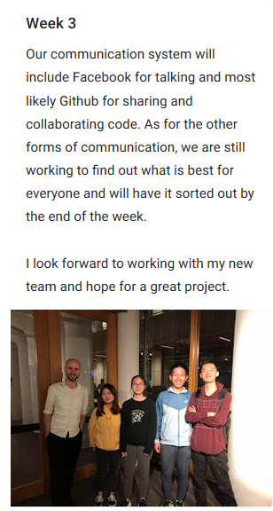
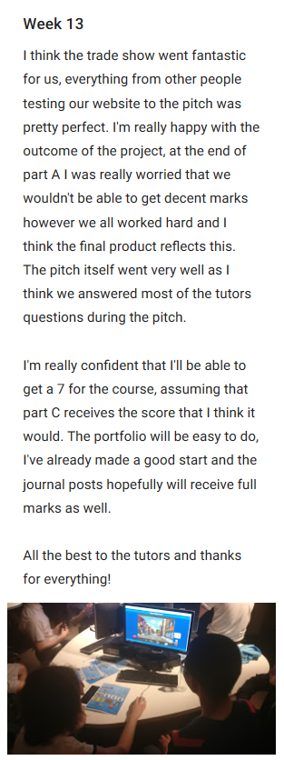
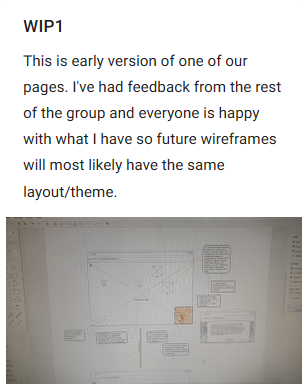
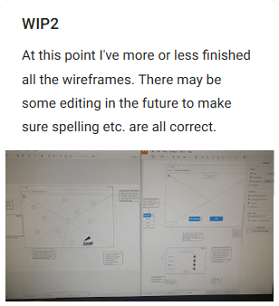
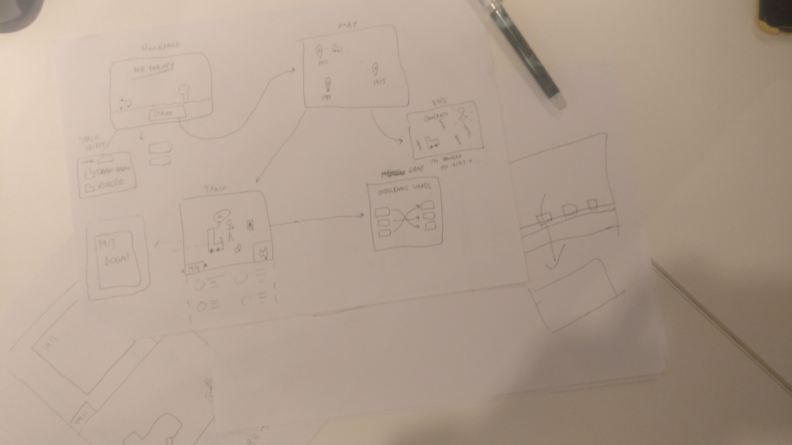
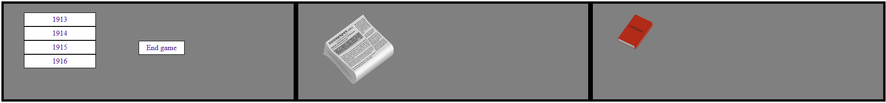
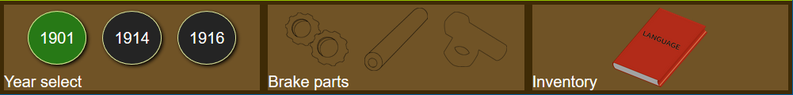

My name is Jiaxi Zhou (Josh) and I am currently working towards a dual Bachelors at UQ, at the time of writing, I'm currently in my second year of university. My choice of study is Information Technology and Science, majoring in Software Design and Mathematics. If everything goes according to plan, my graduation ceremony will be at the end of 2020.
Dev
I'm proficient with Java and Python with some basic knowledge in C and C++. I also have experience with databases and SQL.
With web development, I am confident in HTML, CSS and JavaScript. I am also able to do some basic PHP if needed.
Design
My deisgn process is to always create rough sketches and low quality wireframes by hand first before moving towards higher fidelity mockups and designs.
I mainly use Photoshop to create and edit assets, although I do have basic Adobe Illustrator knowledge.
Other skills
Given my studies in mathematics, I am very confident in solving equations and finding solutions in various different ways, strengthening my problem solving abilities. This knowledge can be applied into certain IT fields such as artificial intelligence and facial recognition.
I'm also proficient in MATLAB and using it to model real world mathematical problems.
Contact details
You can contact me at: joshua.zhou@uq.net.au
Journals
The journals during this project really helped me reflect and document the work that I did. I think it was a important part of my success thorughout the semester, it was really easy to go back and remind myself on what I had done and what needed to be done using these journals.
I've also highlighted some journal posts, they represent important moments during the project or just something that I was proud of that I can show (so anything I've drawn or designed myself).
I might refer back to other journal posts in the later sections. You can also hover over the images on the right to reveal some thoughts now that the project is completed.




This was the day that I first met my future team members. Looking back I think I was definitely very lucky to have Brian on the team, if it weren't for his help, this project would not have done as well as it did. That being said, it was a very important learning experience, espicially lessons in working with others and in a group project.
10 weeks after meeting my team, the project was finally complete and we were ready to present our product. I think that trade show was an interesting concept and it was fun to see other peoples websites. I think that we performed quite well the people that did test our site all gave positive feedback and I think we did good on the pitch as well. It was a long 13 weeks but I think in the end with all the effort put into the project, it was worth it.
It had been a long time since I had created wireframes for a webpage, so it took some getting used to. I think that overall my wireframes were of high quality and displayed all the necessary information.

Figure 1: Paper drawing of website layout.Figure 2: Paper prototype during the testing session.
Part A
Part A was the first deadline in the project, it was focused on documentation and cementing what we wanted to do and how we would do it. The task to was to generate a concept document that would reflect the future of this project, and involved details such as the scope, design concept etc.
My work
I was allocated the responsibility of producing annotated wireframes and documenting the project brief. See pages 2 and 18 for the final product.
My process
The process involved was twofold, I focused down the wireframes first as I believed that this was going to be the more difficult task of the two that I was assigned. I started to build the wireframes after one of our contact sessions, where our group had a long discussion on what our pages should look like, figure 1 was the result of that meeting.
From this point on, there really wasn't too much to it. I began with creating the home page to set out the general theme/feel of the site, then I went through and did this for all the other pages that we had. I added in the annotations and some other asides to complete the work for this section.
The project brief was also very easy to do since I understood what our project was going to be and what the final product was expected to look like.
My journals from weeks 1-6 can give some more personal insight.
Part B
Part B was the second deadline of the project, it involved producing a working demo that would representative of the final product. This meant getting the crucial webpages ready as well as the base functionality. In addition, a progress report was also required.
My work
My work for this part of the project involved the most work out of all the other parts, I was responsible for creating one of our year pages and some of the javascript functionality. This time the report was done only by two people, myself and another team member, as I felt that having too many people work on documentation makes it more difficult to read and put together. I worked on developing the new navigation dashboard as well. I also suggested that each year page should have it's own theme, so that the experience wouldn't feel stale after the first year. This was implemented shortly after the demo session.
JavaScript
The work done for JavaScript was minimal on my end. Initially I had planed to do more, however as a result of both time and feedback, some functionality was cut (most notably the slide out menu). This meant that I only implemented in the modal windows for our site. This task was very easy to do, I had already implemented this feature from DECO1400 as well so it didn't take long to create. You can click the button below to see an example.
Year Page
The year page was prehaps the most difficult to do because it involved developing a story and finding the motivation for why the user would want to advance in the story. I started with having the story be a very basic "help this person to get something", this way I could focus on getting the coding and assets done. Since we already had a year page completed and the wireframes I produced earlier, it was very easy to lay everything out in consistent fashion. The page relied mostly on HTML and CSS, with a few JavaScript functions to control the modals and text. I had also made some functions relating to localstorage retreival, however I decided against implementing this into the project as I felt that updating everything to work with it was too time consuming and wouldn't have enough of an impact to justify the time used. A minor change to my year page involved setting the year from 1913 to 1914.
See journals week 7-9 for relevant information relating to part B.
Dashboard
The dashboard design involved a simple layout with 2 seperators to break apart 3 sections. I designed the general layout and placement of objects, this would later be refined into something that is more presentable. Hover over the image below to see the differences between our completed build and early build.
Report
My part for the report was completed after the work on my year page ended. I was responsible for the introduction, progress so far and the changes made (during prototyping). This time around, the report only involved two people (myself and another team member) for better clarity and flow.
×
hello there general kenobi


Part C
Part C was the final deadline of the project, it involved a final report and the trade show. The final report involved discussion on the final product, reflection and response to feedback. The trade show was designed to imitate a real client who we had to sell our product to.
My work
The final strech mainly involved bug fixing and working on the report. For me, I was focused mainly on the report itself and ended up doing quite a fair bit, bug fixing was my second priority but another team member covered most of that. I covered the discussion of process, feedback and some of the reflection, for bug fixing it was mainly correcting grammar and typos. See week 13 in the journal section for my thoughts on the completion of the project.
Report
The sections that I was specifically responsible for were the target audience, development process (which invovled issues and challenges, feedback, changes and the mvp), not implemented and improvements. This was a fair amount of work to do, however I didn't have any issues with this at all. The development process was suprisingly easy to do, once I started typing, I didn't really stop until I completed that whole section. I was heavily involved in the development side of things, so I understood exactly what needed to be done. The not implemented and improvements section were also very easy to write, I was fully aware of the features that were cut from the final product (although I did get another team member to add in any features that I had missed.). The improvements section was not all my work, I added parts to it before letting another team member complete the rest.
Bug fixing
This is fairly self explanatory, my bug fixing was mainly related to typos and grammar issues in text. The process was simple, go through the website and read all the text in as much detail as possible. In the end there was alot of fullstops and punctuation missing. I also attempted to optimise some JavaScript code, particularly the bit that deals with local storage. This was not implemented of course, at the time, the website was more or less complete, it would of been very time consuming to get everything updated and working (and without bugs!), I also had much of the report to complete, so I decided to not invest the precious time that was left.
Pitch
I was one of the two speakers during our trade show, this meant preparing a speech and wearing appropriate attire during the pitch. My part of the pitch was to talk about the technicals and to explain what our website was. The construction of the pitch involved a lot of practice with tutors (specifically pitching to them outside the contact room) and communication with them to get the best possible feedback and result. Overall my part of the pitch accounted for prehaps 50-60% of the total time, however I covered all the technical content and brief.
Other work
Some other minor work involved me creating some assets, most notably the 'outline' of the parts you see in the parts section of the dashboard. This was my idea to deal with confusion on how many parts needed to be collected.
Reflection
DECO1800 has been a interesting experience for me, I was able to learn not so much on the technical side, but more with how to interact with other group members and optimise and distribute workload. Overall it was positive, although there were some difficult times as well.
Part A reflection
I think this part of the assessment definitely could have improved. I was not happy with the result that was obtained, and I think it was because there were far too many people working on the documentation. The problem with this is that each group member interprets the task assigned to them very (very) differently, mainly because 3 of our team members were international students. I was frustrated as they were unable to understand what the task required, alot of the times it was related to the content they produced for the concept document. For example the target audience had child personas, however their descriptions didn't match their age etc. Overall part A was a partial success in my eyes, we produced a decent enough report but it could have been far better. In the future, I would restrict the amount of people working on the document (which is actually what I did in parts B and C) to improve clarity. I would also like to start the assessment much earlier, we left the document a bit too late and had to rush towards the end to complete it.
Part B reflection
Part B involved a lot of work, prehaps the most out of all the other parts. This part was slightly stressful as we had to push out a MVP as well as a progress report. Despite this, I am very pleased with how this part turned out, our MVP testing was a success, we addressed all the issues that were present in the paper prototype and also received positive feedback. Our progress report this time was restricted to two people (as mentioned in the part B section), this improved the overall quality, quantity and content. I no longer had to worry about micromanaging other group members and control what they produce. The document flows better, is clearer and most importantly, makes sense. I am very happy with how this part of the assessment turned out, this is also reflected in the mark received. However I do think that in the future we should begin on the MVP a bit earlier.
Part C reflection
The final part of the major project assessment was also very successful. I think that our pitch during the trade show answered all the questions that were present and showcased our website to a high standard. The report was also completed to a high standard as it followed the same rule I had set in place during part B. I don't know what improvements I would give here, I think we completed part C and the project to a high standard.
Overall course reflection
Overall the course provided me some valuable experience in working as a team and in a group. Looking back to my first few journal posts, I definitely think that I was wrong about a few things. Alot of expectations weren't met, though not necessarily in a negative way, I expected to learn more about PHP and backend, however as the project developed, I focused more on the traditional JavaScript, HTML and CSS. This was mainly due to the skillsets of other group members, they were more experienced in server side so I thought it would be better for them to work in PHP instead of me. Even though I was proficient in JavaScript, HTML and CSS, I do not think that my skills were used effectively throughout this project. I believe this was due to the nature of our website, which was similar to that of a game. I did not expect this to be a factor, however it turned out to impact me quite a bit. I think that in the future I need react much faster to any problems that do arise and also to prehaps start asssessment earlier too.
Course Feedback
Feedback I would give for this course is to either remove the portfolio assessment or extend the due date so that it is due after the exam period. Even though I really like the idea and enjoyed building a portfolio, balancing exams and this was difficult to do. Otherwise, I found this course to be really balanced and fun, the tutors were really approachable and easy to talk to. Overall, a good experience.
Portfolio process
The creation of this portfolio involved alot of planning, I focused on design, functionality and layout. Overall, I'm happy with the outcome but definitely think I could have done much better if given more time. Throughout this section, there will most likely be overlap, as a functionality decision might affect the design and so on.
Design
My areas of concern with design was split between theme, colour and readability. I wanted to create something that felt natural with a little vibrancy. To start, I had to pick out the main colours that were going to be used for text. This process was suprisingly long, it was difficult to choose colours that had good contrast and was easy on the eyes as well. In the end I went with "watermelon" green and red (I don't know if thats the actual name). I think this works quite well, it's not overly bright and brings out a little vibrancy to the page. With the colours for text decided, my focus went to the background colours. I didn't want a dark background as I feel this is not suitable for a portfolio, or at least my one. I decided on a slightly darker shade of white, I felt that white was too bright whereas grey was too dark so I went with something in between. I actually chose two colours for the background, they are both very similar so it's hard to tell but if you look closely, you'll see it.
The welcome page was different to the rest of the pages. I wanted to do something different for the welcome page as I knew that first impressions were very important. It had a slightly different colour scheme involving a blue background and white text.
Layout
The layout I decided to go with was a simple 3 coloumn design for the content. I thought that this is a effective way to display lots of text in sizeable chunks so that it doesn't feel like a wall of text. With regards to the navigation and back to top button, the corners of the screen were obvious areas to place them. Although I did consider different locations for the navigation button. You can see a very early sketch I made during brainstorming.
Functionality
Knowing that this would be a one page portfolio, navigating between different pages wouldn't be an issue. However I did notice that having to constantly scroll up and down might become a problem so I remedied that in a few ways. Firstly, the buttons at the welcome section, I put them there so that if a user was revisiting, they could skip to any section from the get go. The second is the navigation button located in the bottom left corner, this is useful for skipping to different sections if you are already half way down the page. It allows access to any of the sections except for the about blurb as I didn't consider that to be a proper section.
Finalisation
The very last thing I did for the portfolio was to ensure that everything looked and worked as it were supposed to. I made sure that the text had no errors by copying them into word and using spellcheck. I optimised my code down to 400 lines of CSS (it was >700 before optimisation). It was nice to have everything completed on time so that I could focus on my exams.